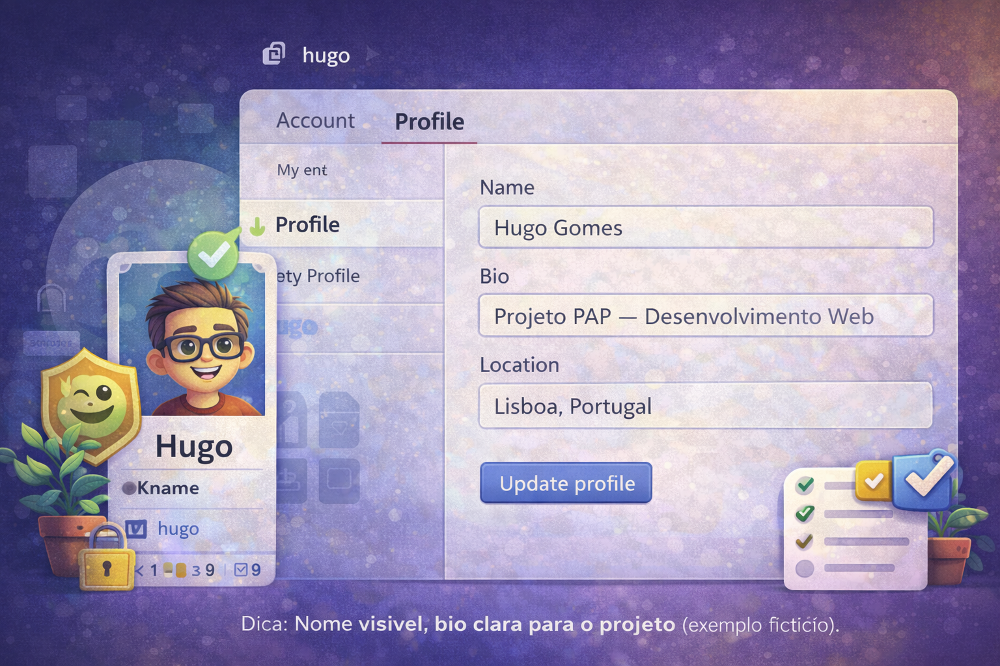
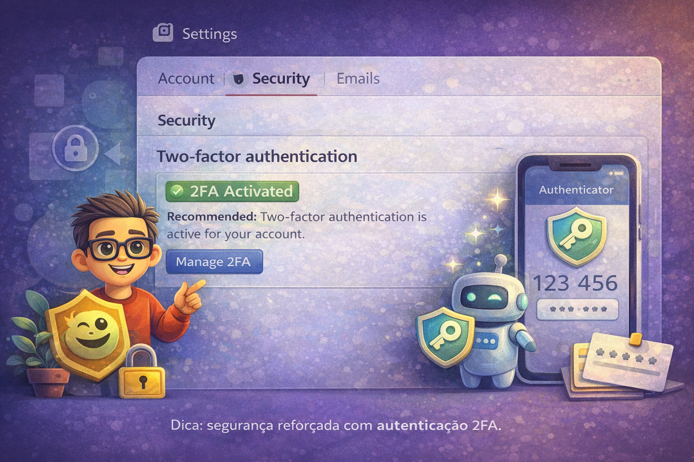

Conta & Perfil
Nesta página fazes a configuração inicial do GitHub para um projeto (ex.: PAP).
Uma conta bem preparada evita problemas mais tarde (acessos, recuperação de conta, publicação no Pages e identificação do autor).
No final, vais ter: conta criada, email verificado, perfil organizado
e (recomendado) segurança reforçada.
🔐 Conta
✅ Email
🧾 Perfil
🛡️ Segurança
Objetivos desta etapa
O que fica “feito” antes de criares o teu primeiro repositório.
- Identificação: nome e fotografia (opcional) para reconhecer rapidamente o autor do trabalho.
- Contacto válido: email verificado para receber alertas e recuperar a conta.
- Boas práticas: username adequado e configuração mínima para projetos escolares/profissionais.
- Segurança: palavra-passe forte e (recomendado) autenticação em dois fatores (2FA).
Dica: evita usernames “infantis” ou pouco identificáveis. Um username neutro facilita estágios, candidaturas e portefólio.
Passos (setup inicial)
Segue por ordem. Marca cada etapa quando estiver concluída.
Link de registo:
github.com/join
Recomendação: usa um email que consultes com frequência e guarda o username num sítio seguro.
📸 Print sugerido: ecrã de criação de conta (sem mostrar dados sensíveis)
✅ Dica: não mostres a palavra-passe nem códigos. Se precisares, tapa essa área antes de entregar.
📸 Print sugerido: página “Emails” com indicação de verificação

✅ Dica: se o email não aparecer como verificado, abre o teu email e procura a mensagem do GitHub.
- Name: Nome e apelido.
- Bio: “Projeto PAP — área/tema” (curto e claro).
- Location: opcional (pode ser cidade/região).
📸 Print sugerido: perfil com nome e bio preenchidos

✅ Dica: uma bio simples ajuda a contextualizar o teu repositório quando partilhares o link.
📸 Print sugerido: segurança/2FA ativo (sem mostrar códigos)

⚠️ Importante: nunca partilhes códigos de recuperação ou QR codes em prints.
- Não coloques morada, contactos pessoais completos ou dados sensíveis no perfil.
- Evita publicar documentos com dados pessoais na pasta
docs/.
- Nos prints, tapa informação sensível (email completo, códigos, etc.).
Lembra-te: se o repositório estiver “Public”, qualquer pessoa com o link pode ver os ficheiros.
Próximo passo
Depois de teres a conta preparada, estás pronto para criar o repositório do projeto.